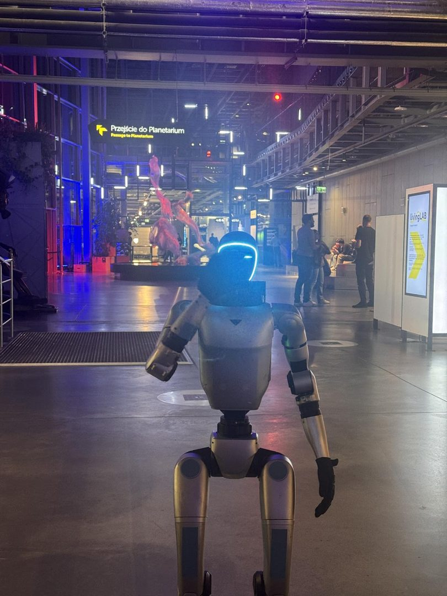

- Startseite
- Referenzen
- Case Study: Kopernikus-Wissenschaftszentrum
Case Study · Wissenschaftszentrum · Warschau
Ein humanoider Roboter beim Abend für Erwachsene im Kopernikus-Wissenschaftszentrum
„Wovon Roboter träumen“ — eine Ausstellung nach Feierabend, nur für Erwachsene. Der Roboter stand an der Luftfontäne und war von 19 bis 22 Uhr im Einsatz.

Die Veranstaltung
Das Kopernikus-Wissenschaftszentrum in Warschau öffnet seine Ausstellungen regelmäßig nach Feierabend nur für Erwachsene. Die Ausgabe „Wovon Roboter träumen“ war der Robotik und der künstlichen Intelligenz gewidmet; Partner des Abends war Samsung. Am selben Tag begrüßte das Zentrum den sechzehnmillionsten Besucher seit seiner Eröffnung.
Der Einsatz
Der Roboter stand an der Luftfontäne, einem der stark besuchten Exponate. Er sprach mit den Besucherinnen und Besuchern, beantwortete Fragen dazu, wie er funktioniert, und posierte für Fotos — drei Stunden lang, von 19 bis 22 Uhr.
Ein erwachsenes Publikum stellt andere Fragen als eine Schulklasse: mehr zur Technik, weniger dazu, ob der Roboter umfällt. Darauf haben wir den Roboter für diesen Abend vorbereitet.
Warum das in Kultur- und Bildungseinrichtungen funktioniert
Museen und Wissenschaftszentren haben dasselbe Problem wie Marken: Sie müssen Menschen einen Grund geben, genau heute zu kommen. Ein humanoider Roboter ist dieser Grund, ohne dass es eine zusätzliche Erzählung braucht — er steht da, spricht mit den Gästen und erzeugt Fotos, die die Besucher selbst veröffentlichen.
Für Veranstalter in Deutschland heißt das: Ein Roboter passt zu Museumsnächten, Wissenschaftstagen, Ausstellungseröffnungen und Abendformaten für Erwachsene. Vor Ort braucht er rund 2×2 m ebene Fläche und eine 230-V-Steckdose; unser Operator ist die ganze Zeit dabei.